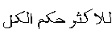

|
Introduction:
The term 'Islamic Investment Fund" in this chapter means a joint
pool wherein the investors contribute their surplus money for the purpose
of its investment to earn halal profits in strict conformity with the
precepts of Islamic Shari‘ah. The subscribers of the Fund may receive
a document certifying their subscription and entitling them to the pro-rata
profits actually earned by the Fund. These documents may be called 'certificates',
'units'. 'shares' or may be given any other name, but their validity in
terms of Shari‘ah, will always be subject to two basic conditions:
Firstly, instead of a fixed return tied up with their face value,
they must carry a pro-rata profit actually earned by the Fund. Therefore,
neither the principal nor a rate of profit (tied up with the principal)
can be guaranteed. The subscribers must enter into the fund with a clear
understanding that the return on their subscription is tied up with the
actual profit earned or loss suffered by the Fund. If the Fund earns huge
profits, the return on their subscription will increase to that proportion.
However, in case the Fund suffers loss, they will have to share it also,
unless the loss is caused by the negligence or mismanagement, in which
case the management, and not the Fund, will be liable to compensate it.
Secondly, the amounts so pooled together must be invested in a business
acceptable to Shari‘ah. It means that not only the channels of investment,
but also the terms agreed with them must conform to the Islamic principles.
Keeping these basic requisites in view, the Islamic Investment Funds may
accommodate a variety of modes of investment which are discussed briefly
in the following paragraphs
Equity Fund ( Top )
In an equity fund the amounts are invested in the shares of joint stock
companies. The profits are mainly derived through the capital gains by
purchasing the shares and selling them when their prices are increased.
Profits are also earned through dividends distributed by the relevant
companies.
It is obvious that if the main business of a company is not lawful in
terms of Shari‘ah, it is not allowed for an Islamic Fund to purchase,
hold or sell its shares, because it will entail the direct involvement
of the share holder in that prohibited business.
Similarly the contemporary Shari‘ah experts are almost unanimous
on the point that if all the transactions of a company are in full conformity
with Shari‘ah, which includes that the company neither borrows money
on interest nor keeps its surplus in an interest bearing account, its
shares can be purchased, held and sold without any hindrance from the
Shari‘ah side. But evidently, such companies are very rare in the
contemporary stock markets. Almost all the companies quoted in the present
stock markets are in some way involved in an activity which violates the
injunctions of Shari‘ah. Even if the main business of a company is
halâl, its borrowings are based on interest'. On the other hand,
they keep their surplus money in an interest bearing account or purchase
interest-bearing bonds or securities.
The case of such companies has been a matter of debate between the Shari‘ah
experts in the present century. A group of the Shari‘ah experts is
of the view that it is not allowed for a Muslim to deal in the shares
of such a company, even if its main business is halâl. Their basic
argument is that every share-holder of a company is a sharîk (partner)
of the company, and every sharîk, according to the Islamic jurisprudence,
is an agent for the other partners in the matters of the joint business.
Therefore, the mere purchase of a share of a company embodies an authorization
from the share-holder to the company to carry on its business in whatever
manner the management deems fit. If it is known to the share-holder that
the company is involved in an un-Islamic transaction, and still he holds
the shares of that company, it means that he has authorized the management
to proceed with that UN-Islamic transaction. In this case, he will not
only be responsible for giving his consent to an UN-Islamic transaction,
but that transaction will also be rightfully attributed to himself, because
the management of the company is working under his tacit authorization.
Moreover, when a company is financed on the basis of interest, its funds
employed in the business are impure. Similarly, when the company receives
interest on its deposits an impure element is necessarily included in
its income which will be distributed to the share-holders through dividends.
However, a large number of the present day scholars do not endorse this
view. They argue that a joint stock company is basically different from
a simple partnership. In partnership, all the policy decisions are taken
through the consensus of all the partners, and each one of them has a
veto power with regard to the policy of the business. Therefore, all the
actions of a partnership are rightfully attributed to each partner. Conversely,
the policy decisions in a joint stock company are taken by the majority.
Being composed of a large number of share-holders, a company cannot give
a veto power to each share-holder. The opinions of individual share-holders
can be overruled by a majority decision. Therefore, each and every action
taken by the company cannot be attributed to every share-holder in his
individual capacity. If a share-holder raises an objection against a particular
transaction in an Annual General Meeting, but his objection is overruled
by the majority, it will not be fair to conclude that he has given his
consent to that transaction in his individual capacity, especially when
he intends to refrain from the income resulting from that transaction.
Therefore, if a company is engaged in a halâl business, but also
keeps its surplus money in an interest-bearing account, wherefrom a small
incidental income of interest is received, it does not render all the
business of the company unlawful. Now, if a person acquires the shares
of such a company with clear intention that he will oppose this incidental
transaction also, and will not use that proportion of the dividend for
his own benefit, how can it be said that he has approved the transaction
of interest and how can that transaction be attributed to him?
The other aspect of the dealings of such a company is that it sometimes
borrows money from financial institutions. These borrowings are mostly
based on interest. Here again the same principle is relevant. If a share-holder
is not personally agreeable to such borrowings, but has been overruled
by the majority, these borrowing transactions cannot be attributed to
him.
Moreover, even though according to the principles of Islamic jurisprudence,
borrowing on interest is a grave and sinful act, for which the borrower
is responsible in the Hereafter; but, this sinful act does not render
the whole business of the borrower as harâm or impermissible. The
borrowed amount being recognized as owned by the borrower, anything purchased
in exchange for that money is not unlawful. Therefore, the responsibility
of committing a sinful act of borrowing on interest rests with the person
who willfully indulged in a transaction of interest, but this fact does
render the whole business of a company as unlawful
Conditions for investment in Shares (
Top )
In the light of the foregoing discussion, dealing in equity shares can
be acceptable in Shari‘ah subject to the following conditions:
1. The main business of the company is not violative of Shari‘ah.
Therefore, it is not permissible to acquire the shares of the companies
providing financial services on interest, like conventional banks, insurance
companies, or the companies involved in some other business not approved
by the Shari‘ah, such as companies manufacturing, selling or offering
liquors, pork, harâm meat, or involved in gambling, night club activities,
pornography etc.
2. If the main business of the companies is halâl, like
automobiles, textile, etc. but they deposit their surplus amounts in an
interest-bearing account or borrow money on interest, the share holder
must express his disapproval against such dealings, preferably by raising
his voice against such activities in the annual general meeting of the
company.
3. If some income from interest-bearing accounts is included in
the income of the company, the proportion of such income in the dividend
paid to the share-holder must be given in charity, and must not be retained
by him. For example, if 5% of the whole income of a company has come out
of interest-bearing deposits, 5% of the dividend must be given in charity.
4. The shares of a company are negotiable only if the company owns
some illiquid assets. If all the assets of a company are in liquid form,
i.e. in the form of money they cannot be purchased or sold except at par
value, because in this case the share represents money only and the money
cannot be traded in except at par.
What should be the exact proportion of illquid assets of a company for
warranting the negotiability of its shares? The contemporary scholars
have different views about this question. Some scholars are of the view
that the ratio of illiquid assets must be 51% in the least. They argue
that if such assets are less than 50%, then most of the assets are in
liquid form, and therefore, all its assets should be treated as liquid
on the basis of the juristic principle:

The majority deserves to be treated as the whole of a thing. |
Some other scholars have opined that even if the illiquid asset of a
company are 33%, its shares can be treated as negotiable.
The third view is based on the Hanafi jurisprudence. The principle of
the hanafi school is that whenever an asset is a combination of liquid
and illiquid assets, it can be negotiable irrespective of the proportion
of its liquid part. However, this principle is subject to two conditions:
Firstly, the illiquid part of the combination must not be in ignore-able
quantity. It means that it should be in a considerable proportion.
Secondly, the price of the combination should be more than the value
of the liquid amount contained therein. For example, if a share of 100
dollars represents 75 dollars, plus some fixed assets, the price of the
share must be more than 75 dollars. In this case, if the price of the
share is fixed as 105, it will mean that 75 dollars are in exchange of
75 dollars owned by the share and the balance of 30 dollars is in exchange
of the fixed assets. Conversely, if the price of that share is fixed as
70 dollars, it will not be allowed, because the 75 dollars owned by the
share are in this case against an amount which is less than 75. This kind
of exchange falls within the definition of 'riba' and is not allowed.
Similarly, if the price of the share, in the above example, is fixed as
75 dollars, it will not be permissible, because if we presume that 75
dollars of the price are against 75 dollars owned by the share, no part
of the price can be attributed to the fixed assets owned by the share.
Therefore, some part of the price (75 dollars) must be presumed to be
in exchange of the fixed assets of the share. In this case, the remaining
amount will not be adequate for being the price of 75 dollars. For this
reason the transaction will not be valid. However, in practical terms,
this is merely a theoretical possibility, because it is difficult to imagine
a situation where the price of a share goes lower than its liquid assets.
Subject to these conditions, the purchase and sale of shares is permissible
in Shari‘ah. An Islamic Equity Fund can be established on this basis.
The subscribers to the Fund will be treated in shari‘ah as partners
inter se. All the subscription amounts will form a joint pool and will
be invested in purchasing the shares of different companies. The profits
can accrue either through dividends distributed by the relevant companies
or through the appreciation in the prices of the shares. In the first
case i.e. where the profits are earned through dividends, a certain proportion
of the dividend, which corresponds to the proportion of interest earned
by the company, must be given in charity. The contemporary Islamic Funds
have termed this process as 'purification'.
The shari‘ah scholars have different views about whether the 'purification'
is necessary where the profits are made through capital gains (i.e. by
purchasing the shares at a lower price and selling them at a higher price).
Some scholars are of the view that even in the case of capital gains,
the process of 'purification' is necessary, because the market price of
the share may reflect an element of interest included in the assets of
the company. The other view is that no purification is required if the
share is sold, even if it results in a capital gain. The reason is that
no specific amount of the price can be allocated for the interest received
by the company. It is obvious that if all the above requirements of the
halâl shares are observed, then most of the assets of the company
are halâl, and a very small proportion of its assets may have been
created by the income of interest. This small proportion is not only unknown,
but also ignore-able as compared to bulk of the assets of the company.
Therefore, the price of the share, in fact, is against bulk of the assets,
and not against such a small proportion. The whole price of the share
therefore, may be taken as the price of the halâl assets only.
Although this second view is not without force, yet the first view is
more precautious and far from doubts. Particularly, it is more equitable
in an open-ended equity fund, because if the purification is not carried
out on the appreciation and a person redeems his unit of the Fund at a
time when no dividend is received by it, no amount of purification will
be deducted from its price, even though the price of the unit may have
increased due to the appreciation in the prices of the shares held by
the fund. Conversely, when a person redeems his unit after some dividends
have been received in the fund and the amount of purification has been
deducted therefrom, reducing the net asset value per unit, he will get
a lesser price as compared to the first person.
On the contrary, if purification is carried out both on dividends and
on capital gains, all the unit-holders will be treated at par with regard
to the deduction of the amounts of purification. Therefore, it is not
only free from doubts but also more equitable for all the unit-holders
to carry out purification in the capital gains also. This purification
may be carried out on the basis of an average percentage of the interest
earned by the companies included in the portfolio.
The management of the fund may be carried out in two alternative ways.
The managers of the Fund may act as mudâribs for the subscribers.
In this case a certain percentage of the annual profit accrued to the
Fund may be determined as the reward of the management, meaning thereby
that the management will get its share only if the fund has earned some
profit. If there is no profit in the fund, the management will deserve
nothing. The share of the management will increase with the increase of
profits.
The second option for the management is to act as an agent for the subscribers.
In this case, the management may be given a pre-agreed fee for its services.
This fee may be fixed in lump sum or as a monthly or annual remuneration.
According to the contemporary Shari‘ah scholars, the fee can also
be based on a percentage of the net asset value of the fund. For example,
it may be agreed that the management will get 2% or 3% of the net asset
value of the fund 1 at the end of every financial year.
However, it is necessary in Shari‘ah to determine any one of the
aforesaid methods before the launch of the fund. The practical way for
this would be to disclose in the prospectus of the fund the basis on which
the fees of the management will be paid. It is generally presumed that
whoever subscribes to the fund agrees with the terms mentioned in the
prospectus. Therefore, the manner of paying the management will be taken
as agreed upon by all the subscribers.
Ijarah Fund ( Top )
Another type of Islamic Fund may be an ijârah fund. Ijârah
means leasing the detailed rules of which have already been discussed
in the third chapter of this book. In this fund the subscription amounts
are used to purchase assets like real estate, motor vehicles or other
equipment for the purpose of leasing them out to their ultimate users.
The ownership of these assets remains with the Fund and the rentals are
charged from the users. These rentals are the source of income for the
fund which is distributed pro rata to the subscribers.
Each subscriber is given a certificate to evidence his proportionate ownership
in the leased assets and to ensure his entitlement to the pro rata share
in the income. These certificates may preferably be called 'sukûk'
-- a term recognized in the traditional Islamic jurisprudence. Since these
sukûk represent the pro rata ownership of their holders in the tangible
assets of the fund, and not the liquid amounts or debts, they are fully
negotiable and can be sold and purchased in the secondary market. Anyone
who purchases these sukûk replaces the sellers in the pro rata ownership
of the relevant assets and all the rights and obligations of the original
subscriber are passed on to him. The price of these sukûk will be
determined on the basis of market forces, and are normally based on their
profitability.
However, it should be kept in mind that the contracts of leasing must
conform to the principles of Shari‘ah which substantially differ
from the terms and conditions used in the agreements of conventional financial
leases. The points of difference are explained in detail in the third
chapter of this book. However, some basic principles are summarized here:
1. The leased assets must have some usufruct, and the rental must
be charged only from that point of time when the usufruct is handed over
to the lessee.
2. The leased assets must be of a nature that their halâl (permissible)
use is possible.
3. The lessor must undertake all the responsibilities consequent
to the ownership of the assets.
4. The rental must be fixed and known to the parties right at
the beginning of the contract.
In this type of the fund the management should act as an agent of the
subscribers and should be paid a fee for its services. The management
fee may be a fixed amount or a proportion of the rentals received. Most
of the Muslim jurists are of the view that such a fund cannot be created
on the basis of mudârabah, because mudârabah, according to
them, is restricted to the sale of commodities and does not extend to
the business of services and leases. However, in the Hanbali school, mudârabah
can be effected in services and leases also. This view has been preferred
by a number of contemporary scholars.
Commodity Fund ( Top )
Another possible type of Islamic Funds may be a commodity fund. In the
fund of this type the subscription amounts are used in purchasing different
commodities for the purpose of their resale. The profits generated by
the sales are the income of the fund which is distributed pro rata among
the subscribers.
In order to make this fund acceptable to Shari‘ah, it is necessary
that all the rules governing the transactions of sale are fully complied
with . For example:
1. The commodity must be owned by the seller at the time of sale,
because short sales in which a person sells a commodity before he owns
it are not allowed in Shari‘ah.
2. Forward sales are not allowed except in the case of salam and istisnâ‘
(For their full details the previous chapter of this book may be consulted).
3. The commodities must be halâl. Therefore, it is not allowed
to deal in wines, pork or other prohibited materials.
4. The seller must have physical or constructive possession over
the commodity he wants to sell. (Constructive possession includes any
act by which the risk of the commodity is passed on to the purchaser).
5. The price of the commodity must be fixed and known to the parties.
Any price which is uncertain or is tied up with an uncertain event renders
the sale invalid.
In view of the above and similar other conditions, more fully described
in the second chapter of this book, it may easily be understood that the
transactions prevalent in the contemporary commodity markets, specially
in the futures commodity markets do not comply with these conditions.
Therefore, an Islamic Commodity Fund cannot enter into such transactions.
However, if there are genuine commodity transactions observing all the
requirements of Shari‘ah, including the above conditions, a commodity
fund may well be established. The units of such a fund can also be traded
in with the condition that the portfolio owns some commodities at all
times.
Murabahah Fund ( Top )
'Murabahah' is a specific kind of sale where the commodities are sold
on a cost-plus basis. This kind of sale has been adopted by the contemporary
Islamic banks and financial institutions as a mode of financing. They
purchase the commodity for the benefit of their clients, then sell it
to them on the basis of deferred payment at an agreed margin of profit
added to the cost. If a fund is created to undertake this kind of sale,
it should be a closed-end fund and its units cannot be negotiable in a
secondary market. The reason is that in the case of murabahah, as undertaken
by the present financial institutions, the commodities are sold to the
clients immediately after their purchase from the original supplier, while
the price being on deferred payment basis becomes a debt payable by the
client. Therefore, the portfolio of murabahah does not own any tangible
assets. It comprises either cash or the receivable debts, Therefore, the
units of the fund represent either the money or the receivable debts,
and both these things are not negotiable, as explained earlier. If they
are exchanged for money, it must be at par value.
Bai‘-al-dain ( Top )
Here comes the question whether or not bai‘-al-dain is allowed in
Sharî‘ah. Dain means 'debt' and Bai‘ means sale. Bai‘-al-dain,
therefore, connotes the sale of debt. If a person has a debt receivable
from a person and he wants to sell it at a discount, as normally happens
in the bills of exchange, it is termed in Sharî‘ah as Bai‘-al-dain.
The traditional Muslim jurists (fuqahâ’) are unanimous on the
point that bai’al-dain with discount is not allowed in Shari‘ah.
The overwhelming majority of the contemporary Muslim scholars are of the
same view. However, some scholars of Malaysia have allowed this kind of
sale. They normally refer to the ruling of Shâfi‘ite school
wherein it is held that the sale of debt is allowed, but they did not
pay attention to the fact that the Shâfi‘ite jurists have allowed
it only in a case where a debt is sold at its par value.
In fact, the prohibition of bai‘-al-dain is a logical consequence
of the prohibition of 'riba' or interest. A 'debt' receivable in monetary
terms corresponds to money, and every transaction where money is exchanged
for the same denomination of money, the price must be at par value. Any
increase or decrease from one side is tantamount to 'riba' and can never
be allowed in Shari‘ah.
Some scholars argue that the permissibility of bai‘-al-dain is restricted
to a case where the debt is created through the sale of a commodity. In
this case, they say, the debt represents the sold commodity and its sale
may be taken as the sale of a commodity. The argument, however, is devoid
of force. For, once the commodity is sold, its ownership is passed on
to the purchaser and it is no longer owned by the seller. What the seller
owns is nothing other than money. Therefore if he sells the debt, it is
no more than the sale of money and it cannot be termed by any stretch
of imagination as the sale of the commodity.
That is why this view has not been accepted by the overwhelming majority
of the contemporary scholars. The Islamic Fiqh Academy of Jeddah, which
is the largest representative body of the Shari‘ah scholars and has
the representation of all the Muslim countries, including Malaysia, has
approved the prohibition of bai’-al-dain unanimously without a single
dissent.
Mixed Fund ( Top )
Another type of Islamic Fund may be of a nature where the subscription
amounts are employed in different types of investments, like equities,
leasing, commodities etc. This may be called a Mixed Islamic Fund. In
this case if the tangible assets of the Fund are more than 51% while the
liquidity and debts are less than 50% the units of the fund may be negotiable.
However, if the proportion of liquidity and debts exceeds 50%, its units
cannot be traded according to the majority of the contemporary scholars.
In this case the Fund must be a closed-end Fund.
|